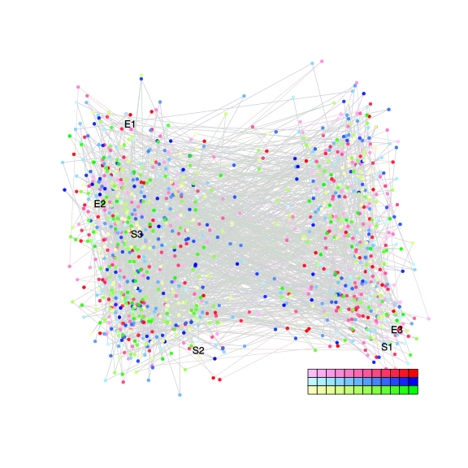

| chain # | burnin | subsample | Iterations (remaining) | command line | subdirectory | directory |
|---|---|---|---|---|---|---|
| 1 | 10000 | 1 | 90000 | /usr/local/bali-phy-3.0-beta2/bin/bali-phy E6_AA_red3_Lambda_Alpha_all4Manatees_BetaGamma.fas -s 67823 -n E6_red3_Lambda_Alpha_all4Manatees_BetaGamma_c1 | E6_red3_Lambda_Alpha_all4Manatees_BetaGamma_c1-1 | /home/willemse/data/trees/BaliPhy/E6 |
| 2 | 10000 | 1 | 90000 | /usr/local/bali-phy-3.0-beta2/bin/bali-phy E6_AA_red3_Lambda_Alpha_all4Manatees_BetaGamma.fas -s 23522 -n E6_red3_Lambda_Alpha_all4Manatees_BetaGamma_c2 | E6_red3_Lambda_Alpha_all4Manatees_BetaGamma_c2-1 | /home/willemse/data/trees/BaliPhy/E6 |
| 3 | 10000 | 1 | 90000 | /usr/local/bali-phy-3.0-beta2/bin/bali-phy E6_AA_red3_Lambda_Alpha_all4Manatees_BetaGamma.fas -s 32275 -n E6_red3_Lambda_Alpha_all4Manatees_BetaGamma_c3 | E6_red3_Lambda_Alpha_all4Manatees_BetaGamma_c3-1 | /home/willemse/data/trees/BaliPhy/E6 |
| P(data|M) = -7888.668 +- 0.244 | Complete sample: 160542 topologies | 95% Bayesian credible interval: 147233 topologies |
Phylogeny Distribution

| Partition support: Summary |
| Partition support graph: SVG |
{kind=link}
| 50% consensus | Newick (+PP) | SVG | |||||
| 66% consensus | Newick (+PP) | SVG | |||||
| 80% consensus | Newick (+PP) | SVG | |||||
| 90% consensus | Newick (+PP) | SVG | |||||
| 95% consensus | Newick (+PP) | SVG | |||||
| 99% consensus | Newick (+PP) | SVG | |||||
| 100% consensus | Newick (+PP) | SVG | |||||
| MAP | Newick (+PP) | SVG | |||||
| greedy | Newick (+PP) | SVG |
{kind=link}
{kind=link}
{kind=link}
{kind=link}
{kind=link}
{kind=link}
{kind=link}
{kind=link}
Alignment Distribution
Partition 1
| Diff | Min. %identity | # Sites | Constant | Informative | ||||
|---|---|---|---|---|---|---|---|---|
| Initial | FASTA | HTML | Diff | 1.09% | 274 | 1 (0.365%) | 185 (67.5%) | |
| Best (WPD) | FASTA | HTML | AU | 10% | 543 | 10 (1.84%) | 133 (24.5%) |
Mixing
{kind=link}
{kind=link}
| burnin (scalar) | ESS (scalar) | ESS (partition) | ASDSF | MSDSF | PSRF-CI80% | PSRF-RCF |
|---|---|---|---|---|---|---|
| 2618 | 647.1 | 906.597 | 0.010 | 0.043 | 1.001 | 1.011 |
Projection of RF distances for the first 3 chains3D | Variation of split PPs across chains |
Scalar variables
| Statistic | Median | 95% BCI | ACT | ESS | burnin | PSRF-CI80% | PSRF-RCF |
|---|---|---|---|---|---|---|---|
| prior | -305.9 | (-343.9, -271.8) | 74.4 | 3628 | 1398 | 1 | 1.002 |
| prior_A1 | -363.6 | (-398.5, -334.2) | 56.93 | 4742 | 1673 | 1.001 | 1.001 |
| likelihood | -7869 | (-7890, -7847) | 78.01 | 3460 | 417 | 1.001 | 1.001 |
| logp | -8175 | (-8209, -8143) | 59.47 | 4540 | 1337 | 1 | 1.001 |
| Heat.beta | 1 | ||||||
| Scale1 | 13.73 | (9.503, 18.97) | 1.012 | 266924 | 109 | 0.9999 | 0.9997 |
| S1.F.pi.A | 0.05494 | (0.0456, 0.06484) | 8.29 | 32568 | 177 | 0.9998 | 1.001 |
| S1.F.pi.R | 0.06705 | (0.05601, 0.07846) | 10.54 | 25619 | 227 | 1 | 1.002 |
| S1.F.pi.N | 0.03225 | (0.02532, 0.03955) | 8.682 | 31100 | 221 | 1 | 0.9982 |
| S1.F.pi.D | 0.05277 | (0.04304, 0.0632) | 8.594 | 31419 | 239 | 1 | 1.001 |
| S1.F.pi.C | 0.06094 | (0.04911, 0.07343) | 8.163 | 33077 | 510 | 1 | 0.9971 |
| S1.F.pi.Q | 0.03857 | (0.03147, 0.04607) | 8.858 | 30482 | 411 | 1 | 1.005 |
| S1.F.pi.E | 0.06029 | (0.05014, 0.07054) | 8.77 | 30785 | 538 | 0.9992 | 0.9995 |
| S1.F.pi.G | 0.06468 | (0.05242, 0.07805) | 9.067 | 29780 | 819 | 1 | 0.9941 |
| S1.F.pi.H | 0.02753 | (0.02088, 0.03458) | 7.946 | 33979 | 406 | 1 | 0.9998 |
| S1.F.pi.I | 0.05128 | (0.04263, 0.06058) | 8.92 | 30270 | 895 | 1 | 0.9987 |
| S1.F.pi.L | 0.1111 | (0.09586, 0.1267) | 8.329 | 32417 | 162 | 1 | 1.005 |
| S1.F.pi.K | 0.04334 | (0.03537, 0.05176) | 8.96 | 30135 | 382 | 1 | 0.9932 |
| S1.F.pi.M | 0.009587 | (0.006197, 0.01351) | 8.154 | 33111 | 281 | 1 | 0.996 |
| S1.F.pi.F | 0.05629 | (0.04601, 0.06734) | 8.615 | 31339 | 600 | 1 | 1.001 |
| S1.F.pi.P | 0.03792 | (0.02875, 0.04758) | 9.032 | 29893 | 419 | 1 | 1.006 |
| S1.F.pi.S | 0.0558 | (0.04666, 0.06506) | 8.139 | 33174 | 198 | 1 | 1.002 |
| S1.F.pi.T | 0.05442 | (0.04523, 0.06433) | 8.183 | 32994 | 717 | 1.001 | 0.9946 |
| S1.F.pi.W | 0.01735 | (0.0116, 0.02391) | 7.846 | 34413 | 367 | 1 | 1.003 |
| S1.F.pi.Y | 0.04757 | (0.03844, 0.05704) | 8.196 | 32942 | 219 | 1 | 1.002 |
| S1.F.pi.V | 0.05345 | (0.04404, 0.06327) | 9.86 | 27384 | 455 | 1 | 1.004 |
| I1.RS07.meanIndelLengthMinus1 | 11.26 | (7.63, 15.88) | 5.634 | 47926 | 207 | 1 | 1.002 |
| I1.RS07.logLambda | -4.793 | (-5.165, -4.444) | 4.961 | 54426 | 212 | 1 | 0.9993 |
| |A1| | 507 | (475, 539) | 417.2 | 647 | 2618 | 0.9847 | 1.011 |
| #indels1 | 40 | (36, 44) | 52.52 | 5140 | 276 | 0.8333 | 0.9975 |
| |indels1| | 417 | (375, 464) | 127.8 | 2113 | 510 | 0.9886 | 1.004 |
| #substs1 | 1507 | (1477, 1530) | 375.3 | 719 | 1802 | 0.9813 | 1.011 |
| Scale1*|T| | 17.85 | (16.78, 18.95) | 5.119 | 52749 | 94 | 1 | 1 |
| |A| | 507 | (475, 539) | 417.2 | 647 | 2618 | 0.9847 | 1.011 |
| #indels | 40 | (36, 44) | 52.52 | 5140 | 276 | 0.8333 | 0.9975 |
| |indels| | 417 | (375, 464) | 127.8 | 2113 | 510 | 0.9886 | 1.004 |
| #substs | 1507 | (1477, 1530) | 375.3 | 719 | 1802 | 0.9813 | 1.011 |
| |T| | 1.3 | (0.8909, 1.767) | 1.004 | 268997 | 101 | 1 | 0.9994 |